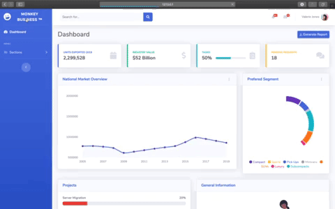
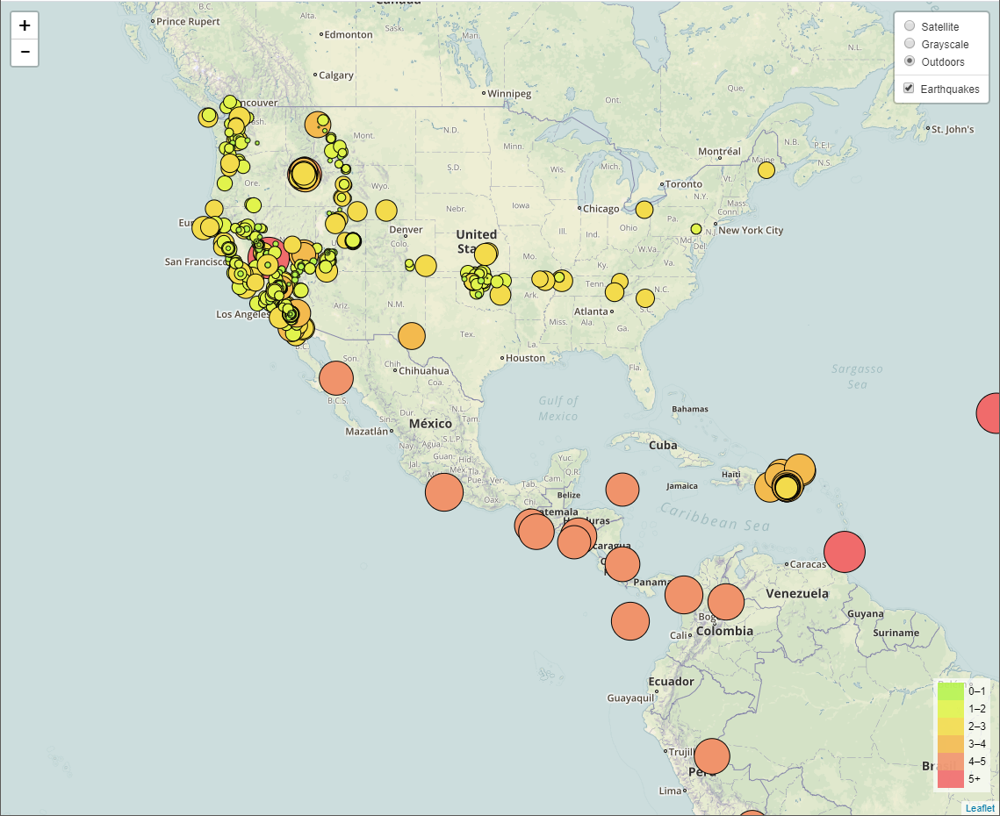
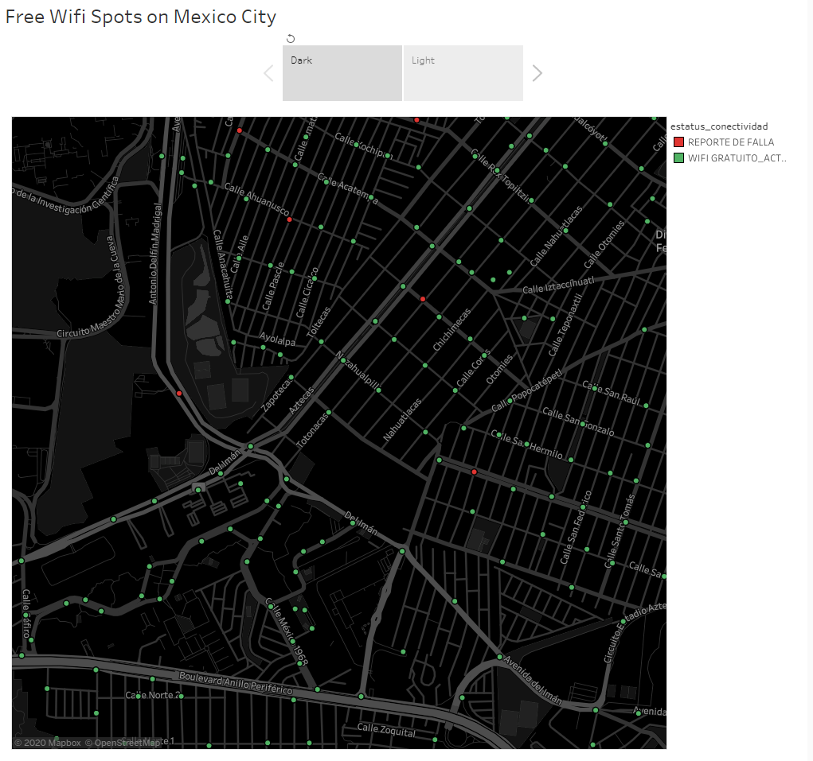
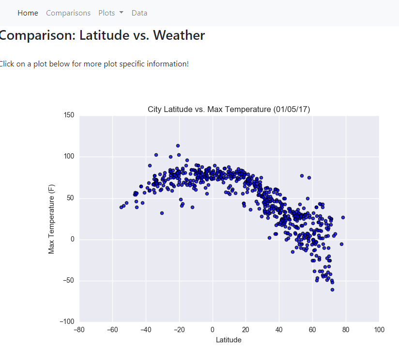

February, 2020
CitiBike is a bike sharing mobility option for the people of New York, with nearly 15,000 bikes and 900 stations
is by far the most used service by people who would rather take a bike than use a taxi or the subway.
The below dashboard shows some insights about the people that use this service, provides the most popular arrival and departure locations as well as some demographics.
Given the amount of data available this analysis only takes in consideration the last 6 months of 2019.
Hope you enjoy it!.
March, 2020
Mexico Outlook
Cars Sales

This is a collaborative project. Pao, Richard and I worked together on this dashboard that shows the current status of the Cars Sales on Mexico.
We did use of Python, Flask and Mongo DB. You cand find them on LinkedIn and also you can check out the GitHub Repo below.
Fun Fact: We called ourselves "Monkey Business".
February, 2020
Use of Leaflet to plot earthquakes around the world

Using GET requests connected to a Json file from the USGS I was able to plot earthquakes on a map and since the file is constantly updated you will find always the latest information.
The earthquakes are plotted based on their magnitude and location. Check out the interactive map below because you can browse it on the layout that you preferred (Satellite, Grayscale and Outdoors).

Have you ever run out of data on your mobile device?
I'm pretty sure we've all been there, that's why I decided to create a map using the open data that the local goverment provides.
Using mapbox, Tableau and the open data you can have a clear picture (if you are on CDMX) of where you can navigate for free.

On this little project I created a simple website that shows you a brief
analysis on how the weather changes based on the location. The raw data is shown as a table on the website and also is responsive.
Plots were made on python and exported to image for the website.